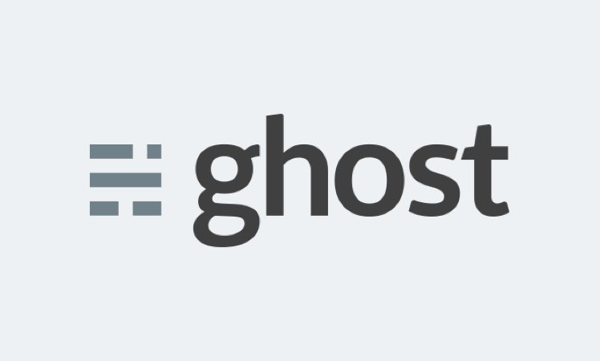

Great Pics with Leica
by Miguel PalauThere's never been a better time for men to like clothes. But along with the rich variety of labels, styles, and stores speaking to guys of all shapes and sizes comes increased competition. In that crowded landscape, even the most storied brands have to find.
There's never been a better time for men to like clothes. But along with the rich variety of labels, styles, and stores speaking to guys of all shapes and sizes comes increased competition. In that crowded landscape, even the most storied brands have to find.
In September, McAfee announced his run for the highest office in the land as a third-party candidate. On Christmas Eve, he upped the ante, claiming in an interview with USA Today that the Libertarian party has asked that he run on their ticket. (Gary Johnson notably ran on the same ticket in 2012 after exiting from the Republican primary.)